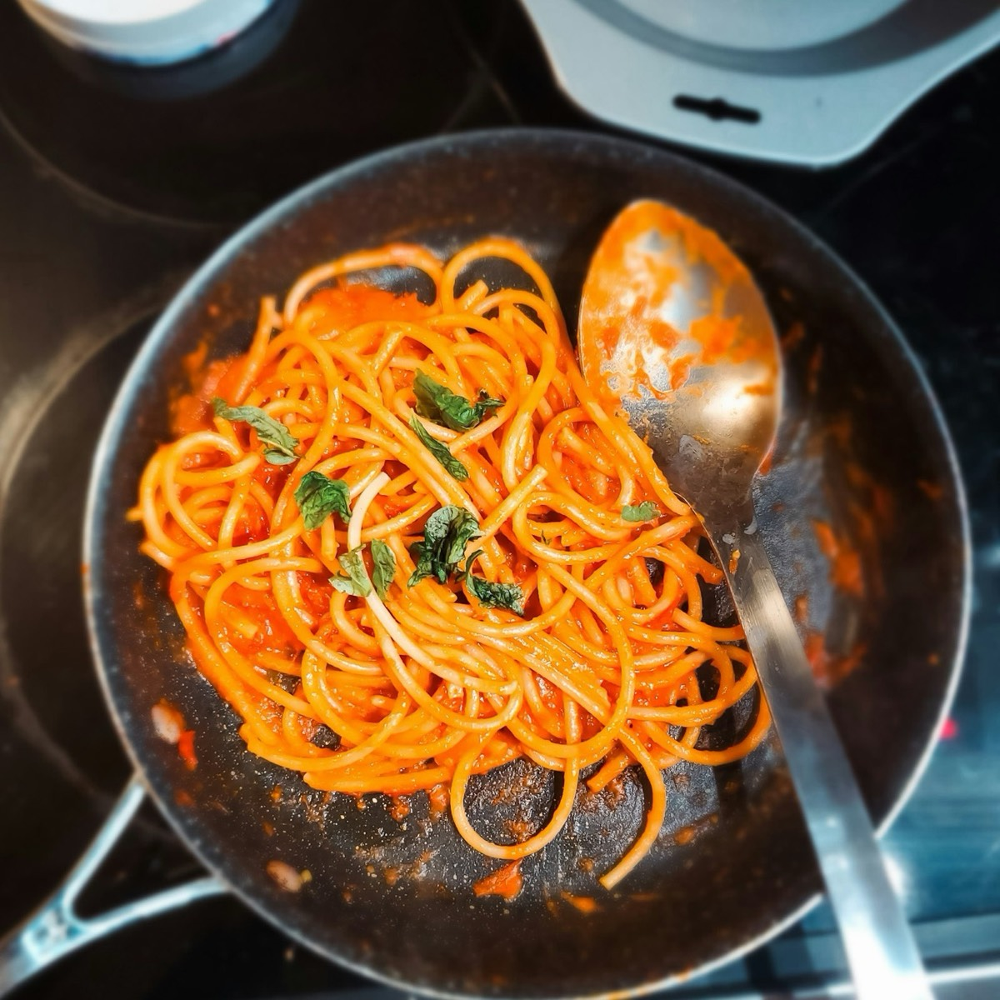

Gochujang Butter Noodles
Spicy, buttery, a little sweet. About twenty minutes, most of it waiting for the pot, for the night you nearly ordered delivery.

Stock photo by Zoshua Colah on Unsplash. It shows this kind of dish; yours will look a little different.
Gochujang is a Korean chili paste: thick, red, more savoury than hot. It comes in a tub or squeeze bottle in the international aisle and keeps for months in the fridge.
- Pot
- one medium pot, 3 to 4 quarts (about 8 inches across)
- Time
- 20 minutes, start to eating. Most of it is the water heating and the spaghetti cooking.
- Hard part
- remembering to save some pasta water before you drain.
You need
| For one | For two | |
|---|---|---|
| Spaghetti | 4 oz (a quarter of a 1-pound box) | 8 oz (half a box) |
| Butter | 1 tablespoon | 2 tablespoons |
| Garlic | 2 cloves | 3 cloves |
| Gochujang | 1 1/2 teaspoons | 1 tablespoon |
| Soy sauce | 1 1/2 teaspoons | 1 tablespoon |
| Honey | 1 teaspoon | 2 teaspoons |
| Salt, for the water | 1 teaspoon | 1 1/2 teaspoons |
Also: a knife, a cutting board, measuring spoons, a mug, a small bowl, tongs or a fork, and a colander. No colander: the pot lid and a dry towel will do, and step 4 says how. Optional: a sliced green onion, sesame seeds, a fried egg from another night's skills.
Contains: wheat, milk, soy. Check your labels.
Swaps. Two packs of instant ramen noodles work in place of spaghetti (throw away the flavour packets); they cook in 3 minutes. Sugar works in place of honey. More heat: double the gochujang, which several published versions do.
The rest of it. Gochujang keeps for months in the fridge with the lid on. Stir a teaspoon into mayonnaise for a dip, or into the egg fried rice. The rest of the spaghetti keeps in the cupboard in its box.
Allergens. Contains wheat (spaghetti, and most gochujang and soy sauce), milk (butter) and soy (gochujang, soy sauce). The optional sesame seeds are sesame and the optional egg is egg. Brands differ, so check every label if you are cooking for someone with an allergy.
Before you turn on the stove
- Peel the garlic and chop it small. A clove is one segment of a garlic bulb. Pull one off, press it with the bottom of a mug until the papery skin cracks, and peel the skin away.
- In the small bowl, stir together the gochujang, soy sauce and honey, measured with the measuring spoons. Put the bowl and the empty mug next to the stove.
Cook
- Boil water. Fill the pot a little more than half full with water. Add the salt. Put it on high heat, the top of the dial, with the lid on. It is ready when big bubbles break the surface all over, about 8 minutes.
- Cook the spaghetti. Add the spaghetti. As the ends soften, push it under the water with a fork. Set a timer for 10 minutes. Now check the box: if it gives a different cooking time, add or subtract a minute to match. Leave the lid off. Stir once or twice so it does not clump. When the timer rings, lift out a strand and bite it. It should be soft with no hard white centre. If it is still hard, give it 1 more minute.
- Save water. Before draining, scoop out about half a mug of the cooking water. The water looks cloudy. That starch is what makes the sauce cling.
- Drain. Pour the spaghetti into a colander in the sink. Steam is hot; pour away from you. No colander: hold the lid on the pot with a dry towel, leaving a gap as thin as a pencil, and pour the water out slowly, away from you.
- Make the sauce. Put the empty pot back on the stove on low heat, the lowest setting on the dial. Add the butter. When it has melted, add the garlic and stir for 30 seconds. Add the gochujang mixture and 2 tablespoons of the saved water. Stir until smooth. It should look like a glossy orange-red sauce.
- Toss. Add the spaghetti back to the pot. Toss with tongs or a fork for 1 minute until every strand is coated. If it looks dry or sticky, add another spoonful of the saved water.
- Taste and serve. Taste a strand. Add a few drops of soy sauce if it needs salt. Eat right away.
If something goes wrong
- Too spicy: stir in another teaspoon of butter or honey.
- Sauce is clumpy: add a spoonful of the saved water and stir over low heat.
- Garlic burned (dark brown, bitter smell): wipe out the pot and start the sauce again. It takes one minute.
The amounts for two were checked against 4 published versions of this dish; the amounts for one are scaled from them.
In the app this recipe is one step to a screen, with the amounts beside each step and timers that ring when your phone is locked. It is free, with two other complete recipes. First Pot for iPhone and iPad.